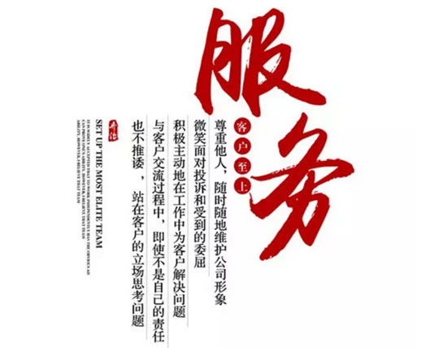

HOME>ABOUT>ARTICLE
2017-5-23
The design a set of perfect office decoration from conception to meet with you, need to go through 4 process of originality to complete. Yoho design, in the service process, always adhere to the craftsman spirit, for your office decoration escort. Service satisfaction is only the starting point, there is no end; service is endless, only pay.
For the needs of decoration customers, in the early consulting service staffs serve you faithfully.The engagement of the project, Yoho business managers will talk to the customer face-to-face,clear the rules of cooperation between the two sides, and according to the requirements of project design carefully select the appropriate designer to go to the project site visit and to communicate with customers for design requirements.
Design, a drawing of the deep feeling confessions.Chinese classical, modern simple, European, classical and so on, what we can see, line, curve, color, size and so on aesthetic principles are the aesthetic creations of the designer improve manuscript repeatedly based on the actual situation of the customer,which is Yoho designer occupation ethics, an obsession with stick.
From the construction site to the construction completion, the construction personnel carry out the decoration construction strictly according to the construction drawings, precise and decisive, crisp and clear, and highlight the precision of the art between. Building a wall for concealed works, slag removal, air conditioning installation, leveling, backfilling and wiring troughs, painting, carpentry approach, Feature wall exterior glass and other construction links, each link pays attention to the detail and comfort experience, striving to achieve the best combination of aesthetic and office environment.
Yoho provides customers up to 2 years of warranty time, and for the emergence of emergencies, yoho dares to promise: 2 hours to arrive at the scene.